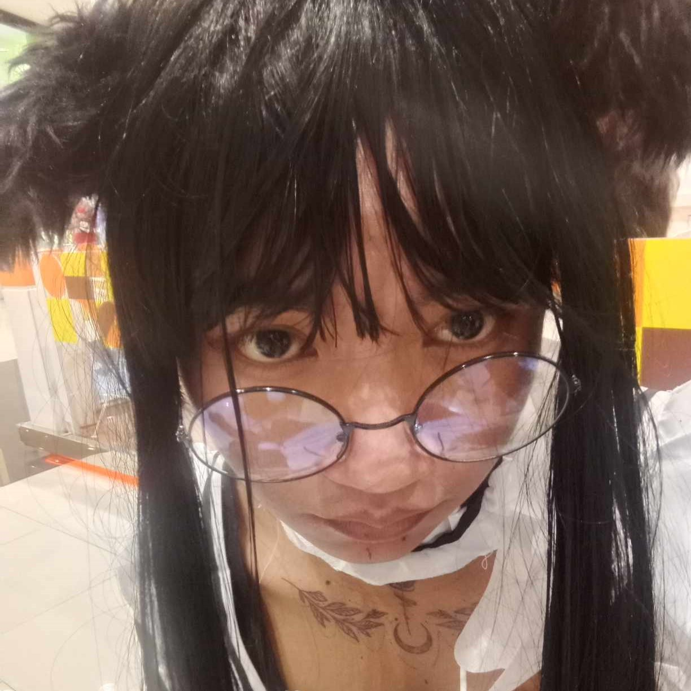
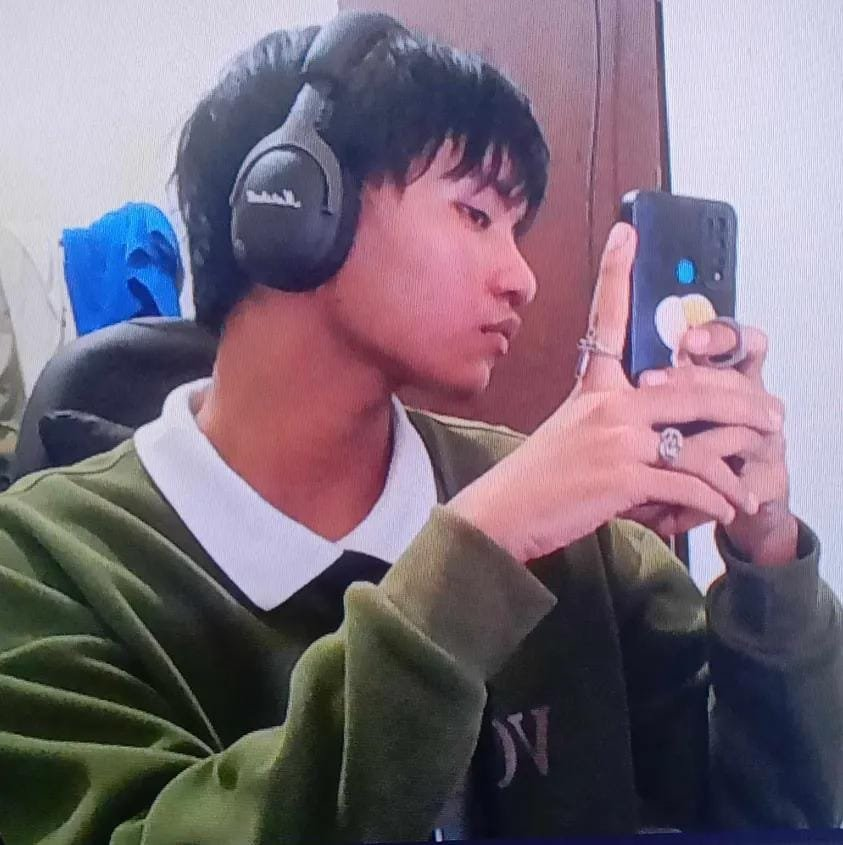

Welcome to My Blog!
Welcome to my cozy little space, where I share my thoughts, ideas, and much more! This website is inspired by Kuromi, the spunky and rebellious character known for her unique style that blends cute and edgy vibes. Just like Kuromi, this blog aims to bring together a mix of sweetness, with content that reflects a balance between charm and a little attitude. Whether you’re here for a dose of aesthetics, deep reflections, or just some fun, I hope this space makes you feel at home. So, grab a cup of your favorite drink, relax, and enjoy your stay!
About Me
Hi, I’m John Argel Apsay, an 18-year-old guy from BSCS 2A and a Kuromi enthusiast with a love for all things black, and just a bit mischievous! This blog is my personal space where I share my hobbies, interests, and the little things that inspire me daily. From the thrill of learning new card tricks to the beats of my beatboxing sessions, or the rush of boxing matches, I’m all about keeping life interesting.
I’m also a huge fan of anime, whether it’s the heartwarming stories, intense battles, or just the incredible art styles, anime has a special place in my heart. Plus, I have a passion for fashion, especially styles that mix cute and edgy vibes, just like Kuromi! I love experimenting with looks that blend sweet pastels with bold, dark pieces to create something unique.
When I'm not lost in a new series or exploring new styles, I enjoy winding down with a good book, a cozy nap, or immersing myself in the latest video games. If you’re into a blend of cute and cool vibes, stick around. I think you’ll feel right at home here!


Latest Post
Today, I want to share my latest thoughts on the cutest accessories you can add to your Kuromi-inspired outfits! Whether you're all about embracing the cute yet mischievous side of Kuromi or blending a little bit of edge into your style, I’ve got some fantastic accessory ideas to elevate your look. From plushies and everything in between, I've got you covered!
Kuromi Plushies: Carrying a small Kuromi plushie as a keychain or a bag charm is a simple way to keep your favorite character close while adding an adorable touch to your style. Attach one to your bag or backpack for an instant pop of cuteness!
Gothic-Inspired Jewelry: Spiked bracelets, or heart-shaped pendants that complement the darker tones of Kuromi’s style. Mixing these with more delicate pieces, like pearl earrings or small heart studs, adds a balanced, layered look that screams Kuromi chic.
Themed Bags: A cute, compact bag featuring Kuromi's design or similar gothic-lolita styles can be the perfect finishing touch. Whether you prefer a small crossbody or a cute backpack, it’s both practical and stylish, making it ideal for everyday use or casual outings.
These accessories are perfect for adding a hint of Kuromi's signature aesthetic to your outfits, whether you’re dressing up for a day out or simply want to add a dash of cute-and-edgy flair to your daily wardrobe. Let your style be as bold, sweet, and mischievous as Kuromi herself, and make every outfit uniquely yours!
Contact Me
Feel free to reach out and connect with me! Whether you have questions, want to chat about shared interests, or just want to say hi, I’d love to hear from you. You can email me at johnargelapsay123@gmail.com for any inquiries or just to keep in touch.
I’m also active on social media, where I share updates, new content, and a peek into my everyday life:
Facebook: John Argel Apsay
Instagram: @argel.zzz
Or if you prefer a more direct line, you can reach me on 09302086381. Let’s stay connected, and I hope to see you around both here on the blog and on my socials!